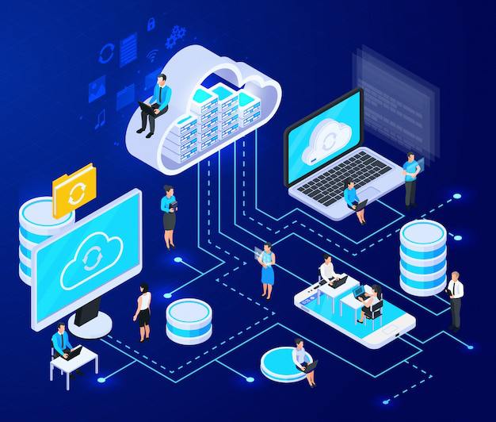
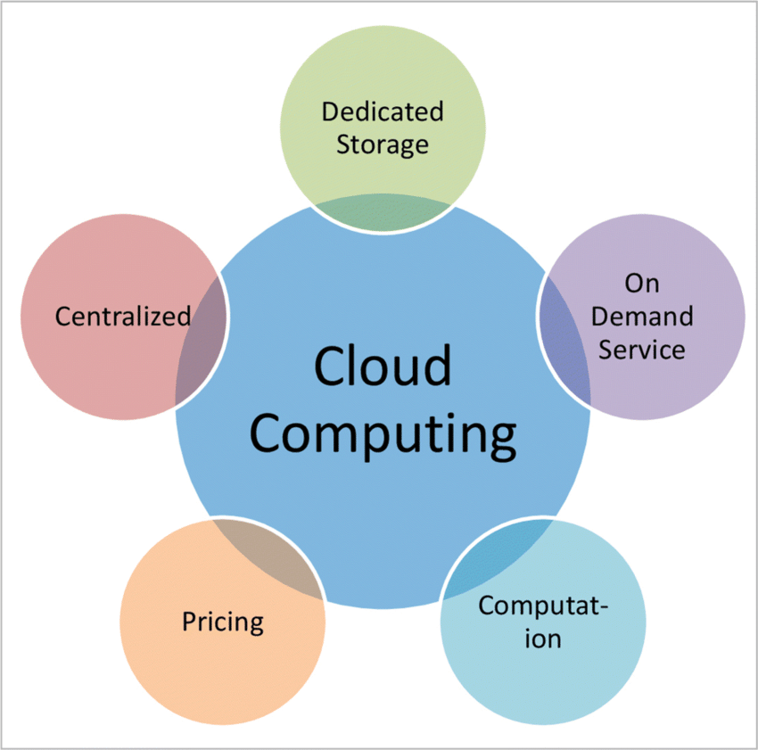
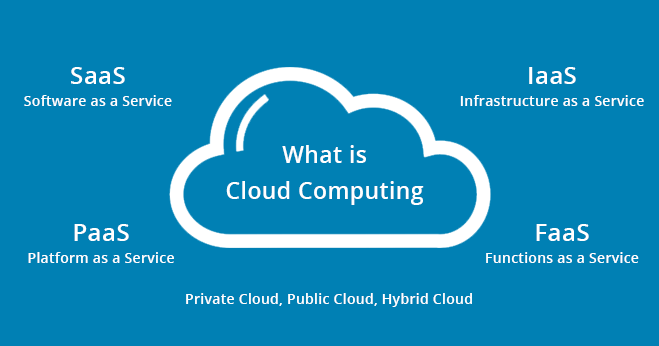

Cloud Computing
These days, every company, big or small, is jumping on the cloud computing bandwagon. Why? Because it saves money, requires less maintenance, and gives you more space to store data—all thanks to servers managed by cloud providers.With the pay-as-you-go system, you only pay for what you use. Unlike traditional servers, where you're stuck paying even when they're idle.

What is Cloud Computing?
Cloud computing is like having a virtual storage unit on the internet instead of keeping everything on your own computer's hard drive. It's also known as internet-based computing because it provides resources over the internet rather than locally.
1. Storage, Backup, and Recovery:
You can store your files, photos, documents, and pretty much anything else on remote servers. This means you can access them from anywhere with an internet connection.
If something happens to your computer, like it crashes or gets stolen, your data is safe and can be recovered from the cloud.
2. Software on Demand:
Instead of buying software and installing it on your computer, you can access it through the cloud whenever you need it. This is great because you don't have to worry about updates or compatibility issues—all the heavy lifting is done on the cloud provider's end.
3. Development of New Apps:
Cloud computing provides a platform for developers to create and deploy new applications and services without having to worry about setting up and maintaining infrastructure. This makes it easier and faster to bring new ideas to life.
4. Streaming Media:
With cloud computing, you can stream videos and audio content directly from the internet without having to download it first. This is how services like Netflix and Spotify work—they store all their content in the cloud so you can access it instantly.
Overall, cloud computing offers convenience, flexibility, and accessibility, making it an essential tool for individuals and businesses alike.
Characteristics of cloud computing

1. Dedicated Storage:
loud computing typically offers scalable storage solutions where users can store their data on remote servers managed by cloud providers. This allows for flexible and efficient storage management without the need for on-premises hardware.
2. On Demand Service:
Cloud computing services are often provided on a pay-as-you-go or on-demand basis, allowing users to access computing resources such as storage, processing power, and applications as needed without long-term commitments.
3. Computation:
Cloud computing platforms offer computational resources such as virtual machines, containers, and serverless computing services, enabling users to perform various computational tasks, run applications, and process data in the cloud.
4. Pricing:
Cloud computing services typically follow a flexible pricing model where users are charged based on their usage of resources. This pay-per-use model allows businesses to optimize costs and scale resources according to their needs, avoiding upfront investments in hardware and infrastructure.
5. Centralized:
Cloud computing often involves centralized management and control of computing resources, data, and applications by cloud providers. This centralized approach allows for efficient resource allocation, monitoring, and maintenance, enhancing scalability, reliability, and security.
Advantages of Cloud Computing

1. Data Security:
Refers to measures put in place to protect data from unauthorized access, use, or destruction. It involves implementing strategies such as encryption, access controls, and regular security audits to safeguard sensitive information.
2. Scalability:
Describes the ability of a system, network, or process to handle growing amounts of work or expand its capacity to accommodate increased demand. Scalability ensures that as the workload increases, the system can efficiently adapt and maintain performance without significant changes or disruptions.
3. Disaster Recovery:
Involves planning and implementing procedures to restore operations and access to data after a disruptive event, such as a natural disaster, cyberattack, or hardware failure. Disaster recovery strategies typically include backup systems, data replication, and contingency plans to minimize downtime and mitigate potential losses.
4. Mobility:
Refers to the capability of accessing and using data, applications, or services from various locations and devices. It enables users to work remotely, collaborate effectively, and access resources on the go, often facilitated by technologies like cloud computing, mobile devices, and wireless networks.
5. Reduced Cost:
Denotes the financial benefits achieved by implementing efficient technologies or strategies that lower expenses associated with data management, operations, and infrastructure. This can include adopting cloud services to reduce hardware and maintenance costs, optimizing processes to increase productivity, or consolidating resources to eliminate redundancies and overhead.
Different types of Cloud Computing

1. Infrastructure as a Service (IaaS):
IaaS provides virtualized computing resources over the internet.
Users can rent virtual machines, storage, and networking infrastructure on a pay-as-you-go basis, allowing them to scale resources up or down based on demand.
Examples of IaaS providers include Amazon Web Services (AWS), Microsoft Azure, and Google Cloud Platform (GCP).
IaaS is popular among businesses that need flexibility and scalability without the hassle of managing physical hardware.
2. Platform as a Service (PaaS):
PaaS offers a platform allowing customers to develop, run, and manage applications without dealing with the underlying infrastructure complexities.
It typically includes development tools, databases, middleware, and other resources required for application development and deployment.
Examples of PaaS providers include Heroku, Google App Engine, and Microsoft Azure App Service.
PaaS is ideal for developers and businesses looking to streamline the application development process and focus more on innovation rather than infrastructure management.
3. Software as a Service (SaaS):
SaaS delivers software applications over the internet on a subscription basis.
Users can access these applications through a web browser without needing to install or maintain them locally.
Examples of SaaS applications include Salesforce, Microsoft Office 365, and Google Workspace (formerly G Suite).
SaaS is popular among businesses for its ease of use, scalability, and cost-effectiveness, as it eliminates the need for upfront software licensing and hardware investments.
4. Public Cloud:
Public cloud services are provided over the internet by third-party providers and are available to the general public.
Resources such as computing power, storage, and networking are shared among multiple users, offering scalability and cost-effectiveness.
Examples of public cloud providers include AWS, Azure, GCP, and IBM Cloud.
Public cloud is suitable for a wide range of use cases, from small startups to large enterprises, due to its flexibility, scalability, and pay-as-you-go pricing model.
5. Private Cloud:
Private cloud is operated solely for a single organization, either internally or by a third-party provider.
It offers more control, security, and customization compared to public cloud deployments but may require higher upfront costs.
Private cloud can be deployed on-premises using virtualization and cloud management software or hosted by a third-party provider in a dedicated environment.
It is often chosen by organizations with strict security and compliance requirements or those needing greater customization and control over their infrastructure.
6. Hybrid Cloud:
Hybrid cloud combines elements of public and private clouds, allowing data and applications to be shared between them.
It offers flexibility, scalability, and the ability to leverage existing investments in on-premises infrastructure while taking advantage of the benefits of the public cloud.
Organizations can choose to deploy specific workloads in the most suitable environment based on factors such as performance, security, and cost.
Hybrid cloud deployments can be complex to manage but offer the best of both worlds in terms of control and scalability.
7. Multi-Cloud:
Multi-cloud involves the use of multiple cloud computing services from different providers.
It helps avoid vendor lock-in, enhances redundancy, and optimizes performance by leveraging the strengths of different platforms.
Organizations may choose to use multiple cloud providers for various reasons, such as geographic diversity, specialized services, or risk mitigation.
Multi-cloud environments require careful planning and management to ensure seamless integration and efficient resource utilization across different platforms.